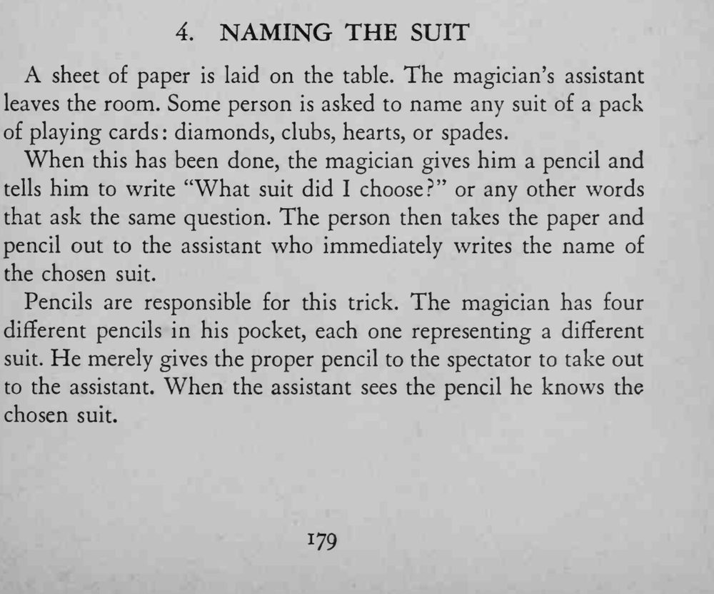

观众任选一种花色，把写有问题的纸和一支铅笔交给门外的助手，助手一看便立刻写出观众选的花色。
四支铅笔必须外观一望可辨，并事先与四种花色定好对应关系，递笔时不能拿错。

A sheet of paper is laid on the table. The magician's assistant leaves the room. Some person is asked to name any suit of a pack of playing cards: diamonds, clubs, hearts, or spades. When this has been done, the magician gives him a pencil and tells him to write "What suit did I choose?" or any other words that ask the same question. The person then takes the paper and pencil out to the assistant who immediately writes the name of the chosen suit. Pencils are responsible for this trick. The magician has four different pencils in his pocket, each one representing a different suit. He merely gives the proper pencil to the spectator to take out to the assistant. When the assistant sees the pencil he knows the chosen suit.